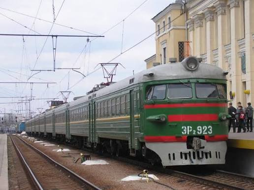

Пригородный электропоезд — Рижский вагоностроительный завод
ЭР2 («Электропоезд Рижский, 2-й тип») — классический советский пригородный электропоезд постоянного тока напряжением 3 кВ, ставший на десятилетия главным «героем» электрифицированных пригородов СССР. Выпускался с 1962 по 1984 год Рижским вагоностроительным заводом (РВЗ/RVR) вместе с Рижским электромашиностроительным заводом (РЭЗ/RER), поставлявшим электрооборудование, и Калининским заводом (КВЗ), дававшим тележки и часть кузовов. Составы формировались из 4—12 вагонов, основой был 10-вагонный поезд схемы 2Пг+5Мп+3Пп мощностью 4000 кВт с максимальной скоростью 130 км/ч. Всего было построено 850 составов (около 9211 вагонов); после 1991 года ЭР2 работали в России, на Украине, в Латвии, Эстонии, Азербайджане, Армении, Грузии, Абхазии и Крыму.